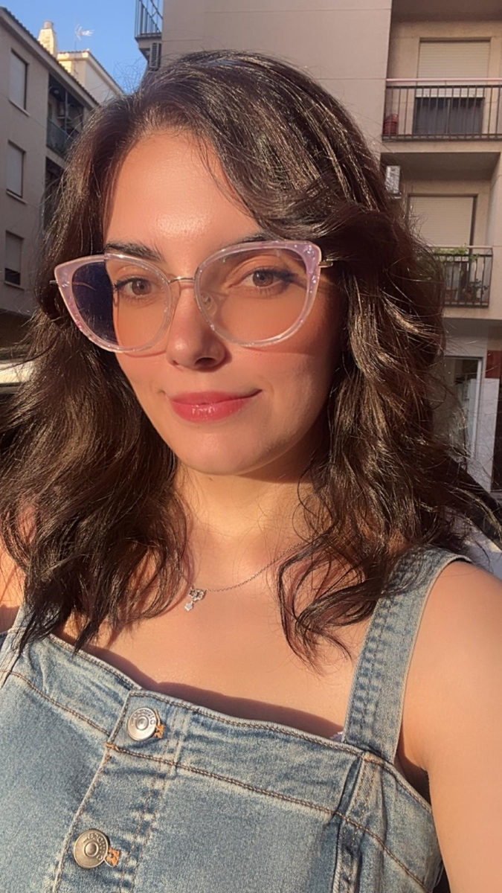
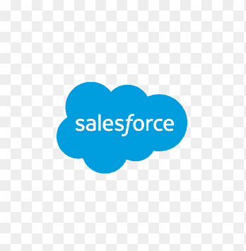
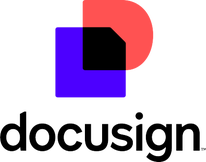
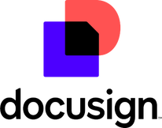

Victoria María Fornieles Verdugo
Summary

I consider myself a hard-working and inquisitive professional, with demonstrated skills in multicultural environments and a strong learning capacity.
Education
- Editorial Reader Course by Cursiva and Penguin Random House Grupo Editorial. 2024.
- MA in English Literature by the University of Granada. 2021 - 2022.
- Linguisitc Immersion by International University Menéndez Pelayo. 2019.
- Research Scolarship. Roosevelt University Chicago. 2018.
- Bachelor's Degree in English Studies by the University of Granada. 2016 - 2021.
Work Experience
Customer Success Representative and Operations Associate - K2 Partnering Solutions.
February 2023 - June 2024
- Comprehensive project management, including planning, execution and monitoring.
- Data analysis to prepare reports that facilitate strategic decision making.
- Proficiency in Microsoft Office and CRM systems such as Salesforce for effective customer relationship management.
- Use of IQN and Fieldglass to manage hourly allocations.
Administrative Officer and Transtator - Larrauri & Martí Abogados.
June 2022 - February 2023
- Management and translation of legal documents, contracts and proposals.
- Maintainance of client files, verification of compliance policies.
- Preparation of Purchase Orders.
- Email management and use of Electronic Signature Software (eg. DocXpresso and DocuSign).
- Translation and interpretation of meetings and conferences (Spanish and English).
International Relations Intern - University of Granada
January 2021 - September 2021
- Communication and monitoring of applications from foreign students.
- Contact with European departments.
- Document and email management.
- Translation of interdepartamental agreements and communications.
Language Proficiency
- English
- Spanish
- Korean
- French
- Japanese
Skills

 

Awards and Certifications
- Employee of the Month - K2 Partnering Solutions S.L. (June 2023)
Other
My Hobbies
Contact Me